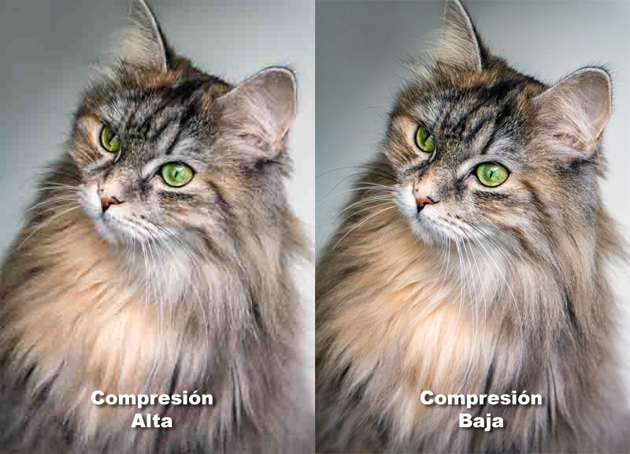

Existen una muchos tipos de formatos de imagen. Elegir el formato perfecto es indispensable a la hora de optimizar un sitio web, ya que la elección correcta ayudará a mejorar los tiempos de carga y respuesta.
Cada formato existente ofrece ventajas y desventajas. Además, cada uno está pensado para ser usado en diferentes situaciones.
Sin embargo todo normalmente se resume en dos formatos: JPG o PNG. Las opciones más comunes cuando se necesita el mostrar imágenes en la internet.
Ventajas y Desventajas
También conocido como JPEG, este formato de imagen ofrece mucha flexibilidad. En imágenes muy complejas, como las fotografías, es posible obtener reducciones de tamaño sin que se aprecie notablemente la pérdida de calidad.
El tipo de compresión que usa es con pérdida. Esto significa que al convertir una imagen a este formato existirá una cierta pérdida de datos. Mientras más fuerte sea la compresión, menor será el tamaño pero también será menor la calidad.

PNG
Este formato, a diferencia del JPG, es considerado de compresión sin pérdida. Esto significa que toda imagen guardada será idéntica a la original. Pero a cambio, esto genera imágenes que tienden a ser de mayor tamaño. Pero hay algunas excepciones. Como por ejemplo si se trata de gráficos simples. En esos casos se puede obtener un tamaño mucho menor que con él JPG.
Ventajas y Desventajas
Cuando existen muchos colores sólidos, como con las imágenes hechas a vectores, este formato brilla. Una imagen igual en JPG podria mostrar “suciedad”, conocido como artefactos de compresión, y terminar siendo más grande en tamaño que una en PNG.
Si se usaran imágenes que contienen transparencias, este podría ser el mejor formato para mostrarlas. Ya que conservará la transparencia y calidad con un tamaño razonable. Si valoras más la calidad que el tamaño de una imagen, el formato PNG pudiera ser la opción ideal.
Tipos De Audio
MP3
Es un formato de audio digital comprimido, por lo que pierde calidad para conseguir un menor tamaño del archivo. Es el formato de audio más utilizado en el mundo. Se estima que para que se pueda utilizar este formato sin perdida notable, se debe optar por archivos codificados a 128 Kbps o mayor. Es el archivo preferido para compartir en internet por su tamaño.
WAV
Es un formato de audio digital propiedad de Microsoft e IBM, sin compresión, por lo que presenta mejor calidad, es por eso que este formato es utilizado en el audio profesional, la única desventaja es que los archivos suelen ser muy pesados, pueden llegar a pesar 6 veces más que un archivo .MP3.
WMA
Windows Media Audio es un formato de audio digital con perdida propiedad de Microsoft, y es la principal competencia de los formatos MP3, este tipo de formato presenta mayor compresión, pero su algoritmo cuida en mayor parte la calidad. Otorgando archivos livianos con calidad aceptable. También es uno de los más utilizados y compartidos a través de internet.
Formatos De Video
MP4
El formato MP4 es el tipo más común de formato de archivo de video. Como formato preferido de Apple, el MP4 puede también reproducirse en la mayoría de los demás dispositivos. Emplea el algoritmo de codificación MPEG-4 para almacenar archivos de video y audio, y texto, pero ofrece una definición inferior a la de los demás. El formato MP4 funciona bien para los videos publicados en YouTube, Facebook, Twitter e Instagram.
MOV
El formato MOV (QuickTime Movie) almacena video, audio y efectos de alta calidad, pero estos archivos tienden a ser bastante grandes. Desarrollado para el reproductor QuickTime por Apple, los archivos MOV usan la codificación MPEG-4 para reproducir en QuickTime para Windows. El formato MOV es compatible con Facebook y YouTube, y funciona bien para su visualización en televisores.
AVI
El formato AVI (Audio Video Interleave) funciona bien con casi todos los navegadores sitio web en máquinas con Windows, Mac y Linux. Desarrollado por Microsoft, el formato AVI ofrece la más alta calidad, pero también con grandes tamaños de archivo. Es compatible con YouTube y funciona bien para su visualización en televisores.